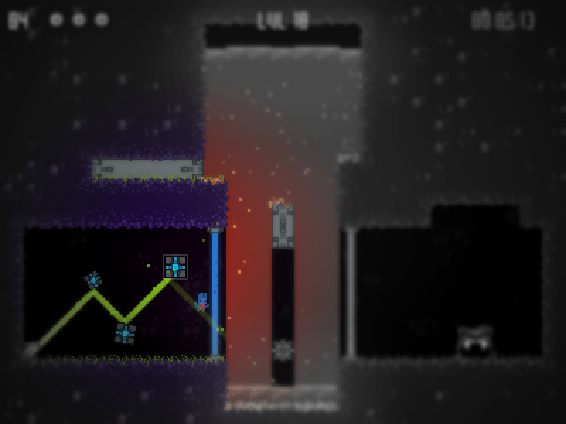

Broken Robot Love

Broken Robot Love is a game I started creating at a game jam in Winnipeg, about a little robot that is seeking his human companion. It's a crazy puzzle platformer revolving around a block-placing, time-warping, mechanic. Adult Swim describes it as "One brave robot is determined to return to his ungrateful human owner. Scale lava pits, leap across cliffs, and manipulate lasers in this heartfelt robotic journey."
So yeah, check it out and tell me what you think!
So yeah, check it out and tell me what you think!